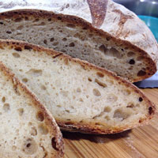

Not is our food good, it's also good-looking! Our patrons often stop to admire our fare with a quick Instagram before digging in. We've collected a few of our favorite shots here.

We start our day at the crack of dawn to bake our own muffins, bread, and dinner rolls. Loaves not used that day are donated to the local food shelter.
People come from all over to enjoy our lovingly made burgers. We grind our own locally-sourced organic beef and turkey so you know it's fresh and free from fillers and other nonsense. Go for one of our creative topping combos or stick with the classics.

Our chef works with local fisherman to pick the freshest the sea has to offer for our daily seafood special. Our Roast Cod Caponata with Roasted Potatoes is an old favorite with our regulars.

Come and enjoy our juicy fried chicken with your topping of choice!

Our fries are the best side combination for your main dish.Their thin and crunchy taste would be the perfect way to start the day!

Our tabouleh is the a very finely and delicious salad, the best option for a very light and delicious meal!
Back to the home page